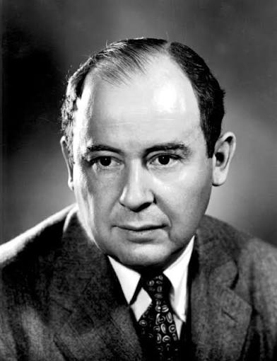
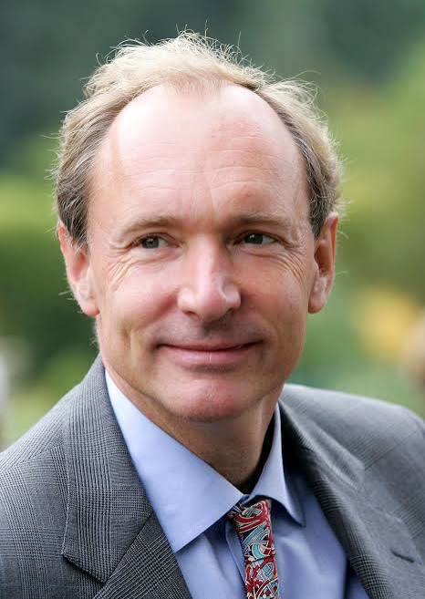
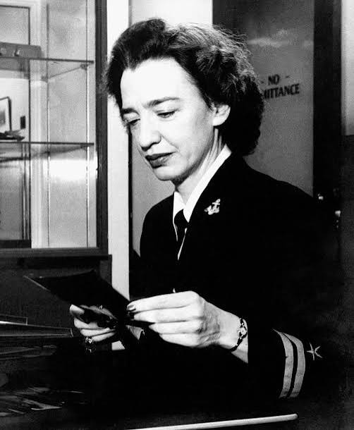

⌘INFORMÁTICA BÁSICA
MPCCD
Metodologia e Produção de Conhecimento na Cultura Digital
Da pesquisa à criação: ferramentas e reflexões para participar da cultura digital com autonomia.
PROFESSOR · INFORMÁTICA · IFRJ
Um espaço para aprender computação, compartilhar ideias e entender a tecnologia que faz parte da nossa vida.
Explore os materiais01 / ENSINO
Materiais de aula e referências
para ter sempre por perto.
Metodologia e Produção de Conhecimento na Cultura Digital
Da pesquisa à criação: ferramentas e reflexões para participar da cultura digital com autonomia.
Modelagem de Domínio e Conceitos de Orientação a Objetos
Transforme problemas em modelos e modelos em código com UML, JavaScript e orientação a objetos.
Windows x Linux, comandos no shell e o Windows Explorer.
Interface, atalhos, extensões e o comando code no terminal.
Comandos, boas práticas e um commit de cada vez.
SO, Git e JavaScript. O essencial em uma consulta.
02 / CIENTISTAS DA COMPUTAÇÃO
Conheça algumas das pessoas por trás
da computação que usamos hoje.
Computabilidade e inteligência artificial
Em 1936, Alan Turing apresentou um modelo abstrato de computação que hoje chamamos de máquina de Turing. Seu trabalho ajudou a formalizar o que significa calcular e a investigar os limites dos algoritmos. Também participou da criptoanálise britânica durante a Segunda Guerra Mundial.
Conexão com a sala de aula: Ao estudar um algoritmo, pergunte se ele resolve o problema para qualquer entrada válida e se sempre termina.
Saiba mais: Arquivo de Andrew Hodges sobre Turing ↗Algoritmos e programação estruturada
Edsger Dijkstra contribuiu para a construção rigorosa de programas e para o estudo de algoritmos. Seu algoritmo de caminhos mínimos encontra distâncias a partir de uma origem em grafos com pesos não negativos. Também estudou concorrência e defendeu o raciocínio sobre a correção do código.
Conexão com a sala de aula: Modele locais como vértices e distâncias como arestas. Como encontrar o trajeto de menor custo sem testar todos os caminhos?
Saiba mais: Arquivo E. W. Dijkstra / Universidade do Texas ↗
Arquitetura de computadores
John von Neumann foi um matemático com contribuições para a computação, a teoria dos jogos e outras áreas. Seu relatório sobre o EDVAC ajudou a difundir a organização de computadores com programas armazenados na memória, fruto de um desenvolvimento coletivo.
Conexão com a sala de aula: Instruções e dados podem ser representados na memória. Essa ideia ajuda a entender como um mesmo computador executa programas diferentes.
Saiba mais: Institute for Advanced Study ↗Análise de algoritmos e tipografia
Donald Knuth é autor de The Art of Computer Programming, uma obra de referência sobre algoritmos e sua análise. Criou o sistema tipográfico TeX e desenvolveu a ideia de programação literária, que aproxima código e explicação.
Conexão com a sala de aula: Além de fazer o programa funcionar, explique por que ele funciona e como seu custo cresce quando a entrada aumenta.
Saiba mais: Computer History Museum ↗
World Wide Web
Tim Berners-Lee propôs a World Wide Web no CERN em 1989. Desenvolveu tecnologias e ferramentas iniciais para conectar documentos por hiperlinks. A web utiliza a infraestrutura da internet e tornou possível navegar entre informações publicadas em diferentes lugares.
Conexão com a sala de aula: Um documento HTML com links já participa dessa ideia: conectar informações por endereços, usando padrões compartilhados.
Saiba mais: CERN / O nascimento da web ↗
Compiladores e linguagens
Grace Hopper trabalhou na programação dos primeiros computadores e desenvolveu o sistema A-0, um marco na história dos compiladores. Participou dos esforços que levaram ao COBOL e defendeu linguagens mais próximas das necessidades de quem programa.
Conexão com a sala de aula: Uma linguagem de alto nível permite expressar intenções sem escrever diretamente todas as instruções de máquina.
Saiba mais: Computer History Museum / Software e linguagens ↗As primeiras ideias de programação
Em 1843, Ada Lovelace publicou notas sobre a Máquina Analítica de Charles Babbage, incluindo um procedimento para calcular números de Bernoulli. Também percebeu que uma máquina poderia manipular símbolos e operar sobre algo além de quantidades numéricas.
Conexão com a sala de aula: Computadores representam textos, imagens e sons por meio de dados. A programação permite definir operações sobre essas representações.
Saiba mais: Science Museum / Ada Lovelace ↗Linux e desenvolvimento colaborativo
Linus Torvalds iniciou o kernel Linux em 1991 e criou o Git em 2005. O kernel é o núcleo que gerencia recursos do sistema operacional. O Git permite registrar versões e colaborar de forma distribuída, mantendo um histórico local do projeto.
Conexão com a sala de aula: Ao criar uma branch e revisar um commit, você usa ferramentas ligadas à prática de colaboração em software livre.
Saiba mais: Pro Git / Uma breve história do Git ↗Redes neurais e aprendizagem profunda
Geoffrey Hinton contribuiu para o estudo de redes neurais artificiais e métodos de aprendizagem. Seus trabalhos, com diversos colaboradores, ajudaram a ampliar o uso de redes com múltiplas camadas para aprender representações a partir de dados.
Conexão com a sala de aula: Treinar um modelo significa ajustar parâmetros usando exemplos. Avaliar em dados diferentes dos de treino é essencial para investigar sua capacidade de generalização.
Saiba mais: ACM / Prêmio Turing de 2018 ↗Abstração de dados e tipos
Barbara Liskov liderou o desenvolvimento da linguagem CLU e contribuiu para a abstração de dados. O princípio de substituição associado a seu nome, formalizado com Jeannette Wing, relaciona subtipos à preservação do comportamento esperado pelos usuários de um tipo.
Conexão com a sala de aula: Ao criar uma subclasse, não basta reutilizar código: ela precisa respeitar as promessas do tipo que substitui.
Saiba mais: Computer History Museum ↗Teoria da informação
Claude Shannon publicou em 1948 "A Mathematical Theory of Communication", fundando a teoria da informação: um arcabouço matemático para medir, codificar e transmitir informação com o mínimo de erro. Antes disso, em sua dissertação de mestrado, mostrou que circuitos elétricos podiam implementar operações da álgebra booleana, unindo lógica e engenharia elétrica.
Conexão com a sala de aula: Ao comprimir um arquivo ou verificar a integridade de um download, você está usando ideias que Shannon formalizou sobre bits, redundância e codificação.
Saiba mais: Bell Labs / Claude Shannon ↗Inteligência artificial e Lisp
John McCarthy cunhou o termo "inteligência artificial" em 1956, durante a conferência de Dartmouth, e criou a linguagem Lisp em 1958 — uma das primeiras linguagens funcionais, influente até hoje em pesquisas de IA e processamento simbólico.
Conexão com a sala de aula: Recursão, listas e funções tratadas como valores, ideias que o Lisp popularizou, aparecem hoje em linguagens como JavaScript e Python.
Saiba mais: ACM / Prêmio Turing de 1971 ↗Semântica de linguagens de programação
Dana Scott desenvolveu, com Christopher Strachey, a semântica denotacional — uma forma matemática de atribuir significado preciso a programas. Também criou, com Michael Rabin, o modelo de autômatos finitos não determinísticos, e propôs a teoria de domínios, base para formalizar tipos de dados recursivos.
Conexão com a sala de aula: Quando um tipo de dado é definido recursivamente, como uma lista que contém outra lista, a teoria de Scott explica por que essa definição faz sentido matematicamente.
Saiba mais: ACM / Prêmio Turing de 1976 ↗Linguagem C e Unix
Dennis Ritchie criou a linguagem C no início dos anos 1970 nos Bell Labs e, com Ken Thompson, desenvolveu o sistema operacional Unix. C tornou-se base de sistemas operacionais, compiladores e linguagens posteriores, como C++, Java e JavaScript.
Conexão com a sala de aula: A sintaxe de chaves, ponto e vírgula e tipos de C aparece, direta ou indiretamente, na maioria das linguagens usadas hoje.
Saiba mais: Bell Labs / Unix ↗Bancos de dados e transações
Jim Gray foi um pesquisador fundamental em bancos de dados e processamento de transações. Ajudou a formalizar as propriedades de atomicidade, consistência, isolamento e durabilidade (ACID), hoje padrão em sistemas de gerenciamento de bancos de dados.
Conexão com a sala de aula: Quando uma transferência bancária é "tudo ou nada" — ou é concluída por completo, ou não altera nada —, esse é o princípio de atomicidade que Gray ajudou a formalizar.
Saiba mais: ACM / Prêmio Turing de 1998 ↗Engenharia de software e gestão de projetos
Frederick Brooks liderou o desenvolvimento do IBM System/360 e de seu sistema operacional. A experiência o levou a escrever The Mythical Man-Month, obra clássica sobre gestão de projetos de software, onde formulou a ideia hoje conhecida como "lei de Brooks": adicionar pessoas a um projeto atrasado costuma atrasá-lo ainda mais.
Conexão com a sala de aula: Antes de pedir mais gente para "acelerar" um projeto, vale lembrar que comunicação e integração entre pessoas também têm custo.
Saiba mais: ACM / Prêmio Turing de 1999 ↗Arquitetura RISC e RAID
David Patterson ajudou a popularizar a arquitetura RISC (conjunto reduzido de instruções), hoje presente em bilhões de processadores móveis. Também é um dos criadores do RAID, técnica que combina vários discos para aumentar desempenho e confiabilidade no armazenamento de dados.
Conexão com a sala de aula: Simplicidade no design pode vencer complexidade: o RISC troca instruções elaboradas por um conjunto pequeno, executado com mais eficiência.
Saiba mais: ACM / Prêmio Turing de 2017 ↗Compiladores e teoria da computação
Jeffrey Ullman é coautor, com Alfred Aho e outros, de livros de referência sobre compiladores, autômatos e estruturas de dados. Suas obras formaram gerações de cientistas da computação no estudo de linguagens formais, análise sintática e algoritmos.
Conexão com a sala de aula: Ao entender como um compilador transforma código-fonte em instruções executáveis, você está estudando ideias sistematizadas por Ullman.
Saiba mais: ACM / Prêmio Turing de 2020 ↗Software livre e o Projeto GNU
Richard Stallman fundou o Projeto GNU em 1983 com o objetivo de criar um sistema operacional completo formado inteiramente por software livre. Criou também a Free Software Foundation e a Licença Pública Geral GNU (GPL), que formalizou o conceito de copyleft: usar o direito autoral para garantir que um programa e suas versões modificadas permaneçam livres.
Conexão com a sala de aula: Ao escolher ou publicar um projeto sob uma licença de código aberto, você está lidando com ideias sobre liberdade de software que Stallman ajudou a formalizar.
Saiba mais: Projeto GNU / História do Projeto GNU ↗De algoritmos à inteligência artificial, uma história feita por muitas pessoas. Abra os perfis para descobrir suas contribuições.
03 / DIVAGAÇÕES
Pausas para pensar sobre tecnologia,
educação e o que vem depois.
Uma boa pergunta pode valer mais do que uma resposta pronta. Especialmente quando o código não funciona.
“Não funciona” é o começo da investigação. O que você esperava? O que aconteceu? Qual é o menor exemplo que reproduz o problema? Transformar a frustração em perguntas específicas torna o erro observável.
Ao pedir ajuda, mostre o contexto e as tentativas que já fez. Ao ajudar alguém, explique o caminho da descoberta. Aprender programação envolve construir uma forma de pensar que pode ser compartilhada.
Na próxima falha, anote uma hipótese antes de alterar o código. Mude uma coisa de cada vez. O resultado, mesmo negativo, será informação.
Entre a busca, a IA e a notificação, ainda há espaço para a dúvida e para o tempo de compreender.
Receber uma resposta rapidamente não significa compreendê-la. A compreensão aparece quando conseguimos explicar uma ideia com nossas palavras, aplicá-la em outro contexto e reconhecer onde ela deixa de funcionar.
Uma ferramenta de IA pode sugerir caminhos. A tarefa de verificar fontes, testar exemplos e assumir responsabilidade pelo resultado continua sendo de quem a utiliza.
Experimente uma pausa: antes de consultar uma ferramenta, escreva o que você já sabe e formule uma hipótese. Depois compare sua hipótese com a resposta. A diferença é um bom lugar para começar a estudar.
Acessibilidade começa quando deixamos de imaginar que todas as pessoas navegam como nós.
Uma página pode ser acessada em uma tela pequena, com conexão instável, por teclado ou com leitor de tela. Essas situações fazem parte do uso real da web e merecem entrar no projeto desde o início.
Títulos bem organizados, links descritivos, contraste e controles identificados ajudam a transformar conteúdo em acesso. Uma interface simples também pode reduzir o esforço de quem está aprendendo.
Faça um exercício: tente usar seu site sem o mouse. Você consegue identificar onde está o foco e chegar a todos os controles? Esse teste abre uma conversa sobre quem seu projeto está incluindo.
Um breve relato sobre os dramas de um professor de Computação.
Ser professor é assumir desafios diários. Basta soar o sinal e você estará em outra turma, em uma sala diferente, com outro conteúdo e, principalmente, com outras pessoas. Para aqueles que trabalham em mais de uma instituição, acrescentem-se ainda local, equipe, recursos e chefia diferentes. E, quando o professor finalmente começa a entender como aquela turma ou instituição funciona, termina o semestre ou o contrato, e tudo começa novamente. É cansativo, mas também pode ser recompensador.
Quero compartilhar aqui, mais especificamente, algumas das dificuldades de ser professor na área de Computação. Longe de querer apenas me lamentar, mas desconheço outra área do conhecimento que mude tanto e em um ritmo tão acelerado. Confesso que tenho certa inveja dos professores de Física e Matemática, que ensinam conhecimentos construídos e consolidados ao longo de séculos. São áreas maduras, com conceitos fundamentais bem estabelecidos.
Algo bem diferente acontece na Informática. Parte dessa dificuldade nasce do próprio nome da disciplina ou do curso. Quando se utiliza o termo "Informática", por exemplo, nem sempre fica claro se estamos formando um usuário de recursos de informática ou um profissional responsável por desenvolver e prover esses recursos e serviços. Essa confusão permanece e talvez nunca desapareça completamente, até porque o próprio profissional de TI também é usuário de serviços e ferramentas de informática.
Uma vez esclarecido que o curso é voltado à formação de profissionais de TI, o próximo desafio do professor é adequá-lo ao perfil dos diferentes tipos de alunos. Em um extremo está o famoso "escovador de bits", que sempre teve um computador, do outro, alguém sem qualquer conhecimento técnico, interessado apenas em utilizar aplicações prontas e numa outra posição equidistante está o aluno totalmente perdido que nem sabe por que está ali. Um primeiro passo é dividir a atuação de um profisional da mesma forma que a gente divide uma computador: hardware e software. Embora essa separação faça cada vez menos sentido de forma rígida, costumamos explicar que quem se interessa por software tende a seguir caminhos ligados ao desenvolvimento, enquanto aqueles mais interessados em hardware, redes e sistemas podem se aproximar da área de infraestrutura.
Nesse momento aparece um retrato pouco animador do mercado brasileiro: escolhemos, em grande medida, ser consumidores de produtos tecnológicos em vez de produtores. Trabalhar diretamente com produção de hardware no Brasil tornou-se cada vez mais raro. Explicamos aos alunos que historicamente nem sempre foi assim e que o país já teve empresas nacionais com produção tecnológica relevante. Hoje, entretanto, boa parte da indústria existente depende fortemente de incentivos e mecanismos fiscais, com dificuldade para competir internacionalmente.
O que causa ainda mais incômodo é que, mesmo sem uma indústria de hardware particularmente forte, comprar ou importar computadores e componentes continua sendo caro no Brasil. Mantemos mecanismos destinados a estimular uma produção nacional que, ao menos em muitos segmentos, não conseguiu alcançar os resultados esperados. Do lado menos desesperador, o mercado de software apresenta uma realidade diferente. O emprego na indústria de software brasileira não depende da mesma forma desses mecanismos governamentais. O Brasil é um país bastante digitalizado e existe uma demanda significativa por profissionais de TI. As grandes empresas internacionais de tecnologia — as famosas Big Techs, além dos grupos conhecidos no mercado financeiro como FAANG ou Magnificent Seven — continuam fazendo parte do imaginário e dos sonhos de muitos estudantes. Entretanto, existem boas oportunidades também em empresas brasileiras, especialmente nos setores financeiro, de serviços e em organizações nas quais a tecnologia ocupa papel estratégico. Praticamente qualquer grande empresa precisa de profissionais de TI. Porém, aquelas em que a tecnologia representa um diferencial competitivo tendem a oferecer carreiras e remunerações mais atraentes.
Até aí, fica relativamente fácil convencer o aluno das oportunidades de trabalhar com desenvolvimento de software. O problema começa quando precisamos ensiná-lo a programar. Nesse percurso, os professores de Computação enfrentam diversos desafios. Um deles é desenvolver nos estudantes a capacidade de abstração e o raciocínio lógico necessários à programação. Outro é desfazer um dos grandes mitos contemporâneos: o de que todo "nativo digital" entende de computadores. Infelizmente, nascer cercado de smartphones, aplicativos e redes sociais não significa compreender como um computador funciona. Conhecimentos que consideramos básicos — como utilizar o shell de um sistema operacional, compreender a organização de um sistema de arquivos ou configurar um ambiente de desenvolvimento — muitas vezes são completamente desconhecidos pelos estudantes que cresceram utilizando interfaces gráficas extremamente simplificadas.
E existe ainda outra questão: desenvolvimento de software não é apenas programação. Na verdade, a construção de um software sequer começa necessariamente pela codificação. Então surge uma pergunta incômoda: por que começamos a ensinar Computação justamente pela programação? Não haveria algo mais simples para apresentar ao aluno iniciante? Já ouvi outros professores fazerem essa mesma crítica. Alguns argumentam que damos ênfase excessiva à programação, enquanto conceitos como análise de requisitos, modelagem, orientação a objetos e desenvolvimento orientado a testes acabam ocupando um espaço muito menor no ensino inicial. Ensinar programação, afinal, não significa apenas ensinar algoritmos e estruturas de dados. O estudante precisa simultaneamente aprender a utilizar melhor o computador, preparar o ambiente de desenvolvimento, compreender mensagens de erro e dominar a sintaxe da linguagem escolhida. Só isso já representa uma tarefa árdua. Então, por que não começar o ensino de Computação por assuntos aparentemente mais simples e conceituais, deixando que os alunos dominem gradualmente o computador antes de começar a programar?
Por incrível que pareça, isso pode funcionar ainda menos. Apresentar conceitos muito abstratos a alguém que ainda não possui vivência na área é quase como tentar ensinar uma pessoa a nadar mantendo-a fora da água. Sem ter experimentado os problemas concretos da programação, conceitos como abstração, encapsulamento, arquitetura, padrões de projeto ou engenharia de software podem parecer apenas um conjunto de palavras sem significado prático. A melhor explicação que já ouvi para continuarmos introduzindo a Computação por meio da programação vem justamente do contexto histórico: diante de um computador pronto, uma das primeiras coisas que fazemos é criar um programa para que aquela máquina compute alguma coisa.
Primeiro fazemos o computador fazer algo. Depois começamos a compreender como fazer isso melhor. Se foi assim que aprendemos a explorar os computadores, talvez faça sentido que seja também assim que apresentemos a Computação aos nossos alunos. Confesso que aceitei essa explicação. E assim continuamos ensinando Computação começando pela programação. Mas, como se todas essas dificuldades já não fossem suficientes, surge a Inteligência Artificial generativa, acompanhada de LLMs, assistentes de programação e agora do chamado vibe coding.
De repente, um estudante consegue descrever em linguagem natural aquilo que deseja e receber, em segundos, dezenas ou centenas de linhas de código que talvez ainda não tenha conhecimento suficiente para compreender. E isso nos coloca diante de uma nova pergunta: se a máquina já consegue escrever boa parte do código, o que exatamente devemos ensinar quando ensinamos programação?
Algoritmos? Lógica? Sintaxe? Arquitetura? Engenharia de software? Capacidade de avaliar o código produzido pela IA? Ou tudo isso, mas de uma maneira completamente diferente?
Ainda estamos tentando descobrir.
Mais uma vez, tudo muda — e muda rápido.
Que inveja eu tenho dos professores de Física e Matemática.
04 / SOBRE
Professor de informática.
Um espaço para aproximar pessoas e conhecimento.
Fernando Tamberlini Alves é professor do Curso Técnico de Informática para Internet no IFRJ, campus São João de Meriti, conforme os materiais das disciplinas reunidos neste site.
Aqui você encontra apoio para estudar informática, programação e um pouco de engenharia de software, além de guias práticos e histórias da computação.
Conheça o material de ensino